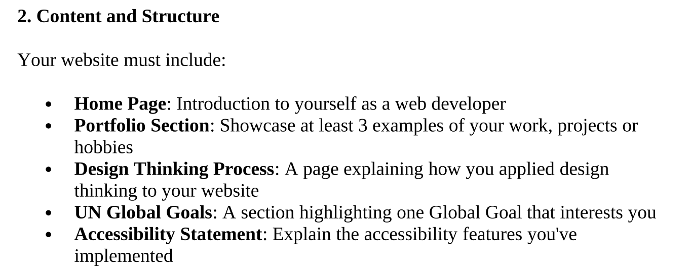

Empathize(which is the requirements)

Define
these are the problems so no worries.
Ideate
"the website has a bright color background and textareas will have darker color. there need to be a navigation bar, which use dark color for better contrast."
Prototype
I didn't save the first version of the website but it looks
horrible
Test
"I will probably not use a
cyanbackground"
"the color theme of the website should be kinda yellow, wheat will probably be a good choice?"
"the pictures are all too big, have a max with of 200px should be good."